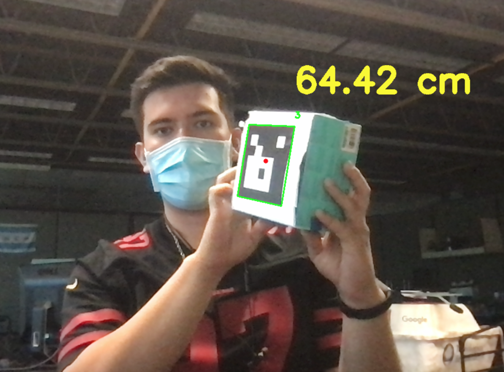
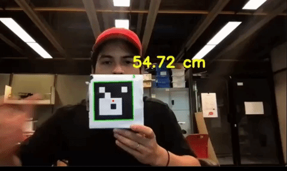

DESARROLLO DE PROTOTIPO DE SOFTWARE
Estimación de distancia por polígonos conocidos con visión computacional

Mediante el uso de detección de objetos con OpenCV encontramos el número de pixeles dentro del área del polígono de un ArUco, desarrollamos un método para obtener la relación entre la distancia del ArUco con el vehículo y el área de nuestro polígono. El proyecto está sustentado bajo el trabajo previo en las áreas de visión computacional y detección de objetos.



Contacto
Jesús Eduardo Arteaga Lara, A01411074@tec.mx